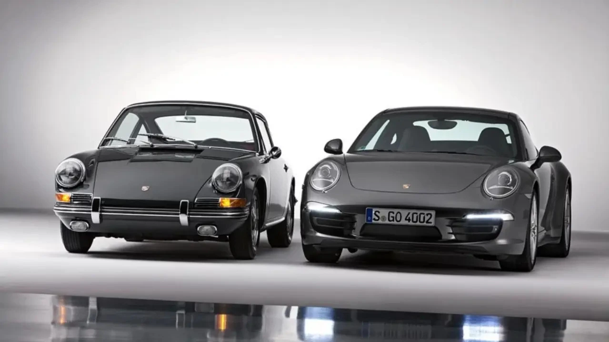

¿Por qué algunas máquinas tienen alma mientras otras solo tienen números?
Millones de automóviles han sido fabricados desde el nacimiento de la industria. Pero solo unos pocos han trascendido su tiempo y las frías hojas de especificaciones para convertirse en verdaderas leyendas, transformándose en el equilibrio perfecto entre diseño de vanguardia e ingeniería extrema.
¿Qué separa a un automóvil ordinario de uno que entra en la historia y redefine nuestra cultura? La respuesta no está en su precio ni en una marca rimbombante, sino en su capacidad para combinar el uso diario con un rendimiento extraordinario en circuito, convirtiéndose en una extensión del piloto.
Las curvas favorecen la aerodinámica pasiva y activa mediante soluciones visuales que desafían la física: aberturas profundas en el capó, ensanchamientos milimétricos en las aletas para albergar vías más anchas y rejillas de ventilación que alivian la presión extrema atrapada en las ruedas, pegando el coche al asfalto en curvas rápidas sin alterar su mítica silueta original.

El Porsche 911 — Un legado que sigue evolucionando su ingeniería sin perder su icónica personalidad
La conexión emocional y el arte invisible
Un automóvil se convierte en leyenda cuando logra crear una conexión emocional profunda con quienes lo conducen o simplemente lo admiran. Deja de ser metal para volverse una escultura viva que canaliza flujos de viento invisibles por debajo de su chasis plano, ocultando una brutalidad técnica masiva bajo formas hermosas y elegantes.
Porsche 911 (992 GT3 RS)
Lleva la aerodinámica de circuitos a la calle con su masivo alerón de cuello de cisne y mandos analógicos en el volante para alterar la suspensión en tiempo real.
Ferrari SF90 / F40
Transformaron la necesidad radical de refrigeración en tomas de aire dramáticas que redefinieron para siempre la estética del superdeportivo moderno.
McLaren W1 / F1
Obras maestras de la física de fluidos que utilizan el efecto suelo para succionar de forma invisible el vehículo al suelo a velocidades absurdas.
El factor humano y la obsesión técnica
Detrás de cada automóvil legendario hay personas. Ingenieros visionarios, diseñadores talentosos y mentes obsesionadas que arriesgan reputaciones enteras para defender conceptos puros, como mantener un motor atmosférico que grita con furia a 9,000 revoluciones por minuto.
Esas personas inyectan su pasión en cada componente, cada decisión y cada milímetro de fibra de carbono. Esa energía humana es lo que finalmente da vida a la máquina, logrando que los cambios de apoyo en zonas viradas sean instantáneos y ericen la piel de quien lo escucha pasar.
El tiempo como juez de la emoción
El tiempo es el juez final. Los automóviles que se convierten en leyendas son aquellos que siguen siendo relevantes, admirados y deseados décadas después de su creación, porque no medimos su valor en caballos de fuerza, sino en las pulsaciones del corazón de quienes los contemplan.
En este espacio entendemos que cada automóvil es un contenedor de historias y un monumento a la emoción pura. No importa la marca, el año o el valor; lo único real es la conexión visceral y el arte en movimiento diseñado para ser recordado por generaciones.